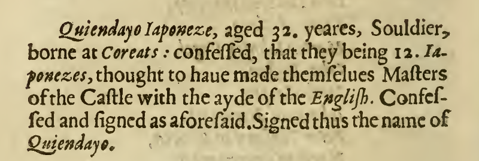
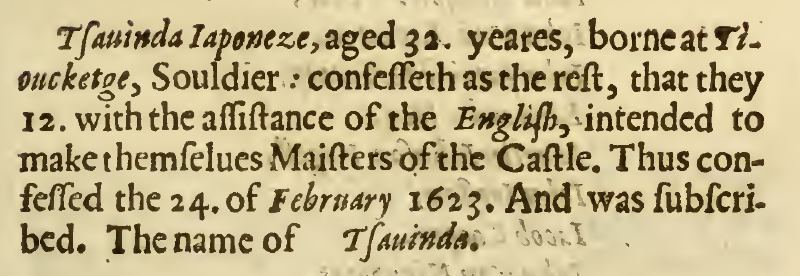
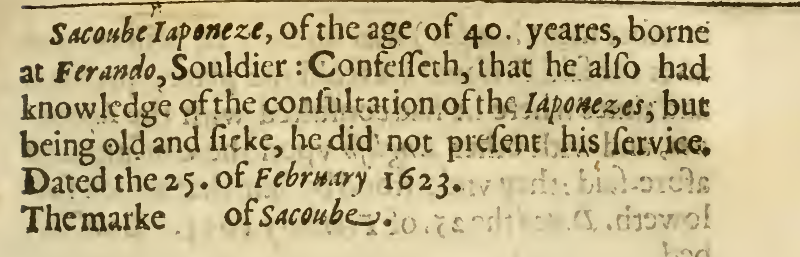
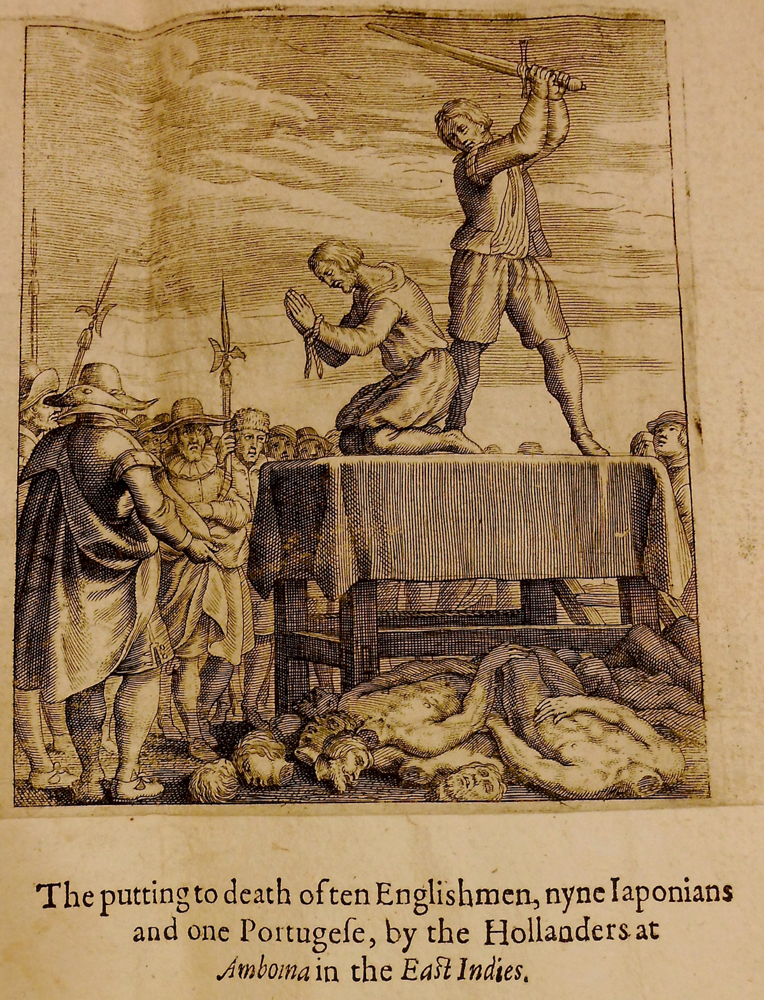

-
Timeline
-
Day 1
23 February, 1623 -
Day 2
24 February, 1623 -
Day 3
25 February, 1623 -
Day 4
26 February, 1623 -
Day 5
27 February, 1623 -
Day 6
28 February, 1623 -
Day 7
1 March, 1623 -
Day 8
2 March, 1623 -
Day 9
3 March, 1623 -
Day 10
4 March, 1623 -
Day 11
5 March, 1623 -
Day 12
6 March, 1623 -
Day 13
7 March, 1623 -
Day 14
8 March, 1623 -
Day 15
9 March, 1623
Overview

Day 1
The Confession of Hytieso
- Occupation: Japanese soldier
- Born in Hirado, Japan
- Age: 24 years
- Torture Status: Tortured with water

Day 2
The Confession of Sidney Migiell
- Occupation: Japanese soldier
- Born in Nagasaki, Japan
- Age: 23 years
- Torture Status: Tortured with water

The Confession of Peter Congi
- Occupation: Japanese soldier
- Born in Nagasaki, Japan
- Age: 31 years
- Torture Status: Tortured with water

The Confession of Soysimo
- Occupation: Japanese soldier
- Born in Hirado, Japan
- Age: 26 years
- Torture Status: Tortured with water
The Confession of Thome Corea
- Occupation: Japanese soldier
- Born in Nagasaki, Japan
- Age: 50 years
- Torture Status: Tortured with water

The Confession of Tsiosa
- Occupation: Japanese soldier
- Born in Hirado, Japan
- Age: 32 years
- Torture Status: Tortured with water
The Confession of Quiendayo
- Occupation: Japanese soldier
- Born in Karatsu, Japan
- Age: 32 years
- Torture Status: Tortured with water

The Confession of Sinsa
- Occupation: Japanese soldier
- Born in Hirado, Japan
- Age: 32 years
- Torture Status: Tortured with water


The Confession of Tsauinda
- Occupation: Japanese soldier
- Born in Chikugo, Japan
- Age: 32 years
- Torture Status: Tortured with water

The Confession of Zanchoo
- Occupation: Japanese soldier
- Born in Hizen, Japan
- Age: 22 years
- Torture Status: Tortured with water
Day 3
The Confession of Sacoube
- Occupation: Japanese soldier
- Born in Hirado, Japan
- Age: 40 years
- Torture Status: Tortured with water

The Confession of Abel Price
- Born in Neles in Wales, in the county of Pembroke.
- Age: 24 years
- Torture Status: Tortured with water


The Confession of Timothy Johnson
- Born in Newcastle
- Age: 29 years
- Torture Status: Tortured with water


Day 4
The Confession of Robert Brown
- Born in Edinburgh, Scotland
- Age: 24 years
- Torture Status: Tortured with water


Day 5
The Confession of John Fardo
- Occupation: English steward
- Age: 42 years
- Torture Status: Tortured with water


The Confession of Edward Collins
- Occupation: English merchant
- Born in London
- Age: 25 years
- Torture Status: Uncertain


The Confession of John Beaumont
- Occupation: English merchant
- Born in Berkshire
- Age: 48 years
- Torture Status: Limited torture with water


The Confession of Ephraim Ramsey
- Occupation: Assistant to the English at Lohoe
- Born in Carelstow in Scotland
- Age: 21 years
- Torture Status: Not tortured

The Confession of John Sadler
- Occupation: English steward at Larica
- Born in London
- Age: 18 years
- Torture Status: Not tortured
The Confession of William Griggs
- Occupation: English merchant at Larico
- Born in Dunstable, in the county of Bedford
- Age: 28 years
- Torture Status: Tortured with water


The Confession of John Clark
- Occupation: Assistant to the English
- Born in Ordington
- Age: 36 years
- Torture Status: Tortured with water and fire


The Confession of William Webber
- Born in Tiverton in Devonshire
- Age: 32 years
- Torture Status: Not tortured

The Confession of George Sharrock
- Occupation: Assistant to the English at Hitto
- Born in Westchester
- Age: 31 years
- Torture Status: Not tortured

Day 6
The Confession of Samuel Coulson
- Occupation: English merchant
- Born in Newcastle
- Age: 39 years
- Torture Status: Tortured with water


The Confession of Gabriel Towerson
- Occupation: Agent for the English in Amboyna
- Born in London
- Age: 49 years
- Torture Status: Tortured with water


Day 7
The Confession of Emmanuel Thompson
- Occupation: English merchant in Amboyna
- Born in Hamburgh
- Age: 50 years
- Torture Status: Tortured with water and fire


Day 8
Day 9
The Confession of John Weatherall
- Occupation: English merchant dwelling at Cambello
- Born in Glaston, in the County of Rutland
- Age: 31 years
- Torture Status: Tortured with water

The Confession of John Powle
- Occupation: Assistant to the English at Cambello
- Born in Bristol
- Age: 31 years
- Torture Status: Not tortured

The Confession of Thoms Sharke
- Born in Colchester
- Age: 36 years
- Torture Status: Not tortured


The Confession of Augustine Peres
- Occupation: Captain of the slaves
- Born in Bengala
- Age: 36 years
- Torture Status: Tortured with water

Day 10
Day 11

Day 12
Day 13
Day 14


Day 15
